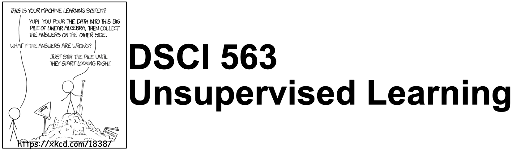

Important links#
Course learning outcomes#
This course is about identifying underlying structure in data. We will talk about clustering, data representation (e.g., dimensionality reduction and word embeddings), and recommendation systems.
Click to expand!
By the end of the course, students are expected to be able to
Explain the unsupervised paradigm.
Explain the intuition behind clustering and use appropriate clustering algorithms for applications such as image clustering and document clustering.
Interpret the results obtained after applying clustering.
Explain the intuition behind dimensionality reduction.
Broadly explain and use linear dimensionality reduction techniques such as PCA, LSA, and NMF.
Explain the intuition of word2vec model to create word embeddings.
Train your own word embeddings and use pre-trained word embeddings.
Explain the recommender systems problem.
Broadly explain and use two common approaches to recommender systems: collaborative filtering and content-based filtering.
Explain consequences of using recommender systems.
Deliverables#
Click to expand!
The following deliverables will determine your course grade:
Assessment |
Weight |
Where to submit |
|---|---|---|
Lab Assignment 1 |
12% |
|
Lab Assignment 2 |
12% |
|
Lab Assignment 3 |
12% |
|
Lab Assignment 4 |
12% |
|
Class participation |
2% |
iClicker Cloud |
Quiz 1 |
25% |
|
Quiz 2 |
25% |
See Calendar for the due dates.
Teaching team#
Click to expand!
Role |
Name |
|---|---|
Lecture instructor |
Varada Kolhatkar |
Lab instructor |
Varada Kolhatkar |
Teaching assistant |
Ngoc Bui |
Teaching assistant |
Mohit Pandey |
Teaching assistant |
Negar Sadrzadeh |
Teaching assistant |
Jordan Yu |
Lectures#
Format#
Click to expand!
This class will follow a semi-flipped classroom format. For four out of the eight lectures, you will be required to watch a few pre-recorded videos (~30 to ~50 min long) before the lecture. All videos are available on YouTube and are linked in the Lecture Schedule below. During lectures, I’ll summarize the content from videos but I’ll assume that you understand the basic concepts from the videos and we will focus on more advanced material, iClicker exercises, discussions, demos, and class activities. It’s optional but highly recommended to download the appropriate datasets provided below and put them under your local lectures/data directory, and run the lecture Jupyter notebooks on your own and experiment with the code.
Lecture Schedule#
This course occurs during Block 5 in the 2021/22 school year.
Datasets#
Here is the list of Kaggle datasets we’ll use in the lectures.
A small subset of 200 Bird Species with 11,788 Images (available here)
If you want to be extra prepared, you may want to download these datasets in advance and save them under the lectures/data directory in your local copy of the repository.
Labs#
During labs, you will be given time to work on your own or in groups. There will be a lot of opportunity for discussion and getting help during lab sessions.
Installation#
We are providing you with a conda environment file which is available here. You can download this file and create a conda environment for the course and activate it as follows.
conda env create -f env-dsci-563.yml
conda activate 563
In order to use this environment in Jupyter, you will have to install nb_conda_kernels in the environment where you have installed Jupyter (typically the base environment). You will then be able to select this new environment in Jupyter. If you’re unable to see the environment in Jupyter, you might have to install the kernel manually. See the documentation here. For more details on this, refer to your 521 lecture 7.
I’ve only attempted to install this environment file on a few machines, and you may encounter issues with certain packages from the yaml file when executing the commands above. This is not uncommon and may suggest that the specified package version is not yet available for your operating system via conda. When this occurs, you have a couple of options:
Modify the local version of the
yamlfile to remove the line containing that package.Create the environment without that package.
Activate the environment and install the package manually either with
conda installorpip installin the environment.
Note that this is not a complete list of the packages we’ll be using in the course and there might be a few packages you will be installing using conda install later in the course. But this is a good enough list to get you started.
Course communication#
Click to expand!
We all are here to help you learn and succeed in the course and the program. Here is how we’ll be communicating with each other during the course.
Clarifications on the lecture notes or lab questions#
If there is any clarification on the lecture material or lab questions, I’ll post a message on our course channel and tag you. It is your responsibility to read the messages whenever you are tagged. (I know that there are too many things for you to keep track of. You do not have to read all the messages but please make sure to carefully read the messages whenever you are tagged.)
Questions on lecture material or labs#
If you have questions about the lecture material or lab questions please post them on the course Slack channel rather than direct messaging me or the TAs. Here are the advantages of doing so:
You’ll get a quicker response.
Your classmates will benefit from the discussion.
When you ask your question on the course channel, please avoid tagging the instructor unless it’s specific for the instructor (e.g., if you notice some mistake in the lecture notes). If you tag a specific person, other teaching team members or your colleagues are discouraged to respond. This will decrease the response rate on the channel.
Please use some consistent convention when you ask questions on Slack to facilitate easy search for others or future you. For example, if you want to ask a question on Exercise 3.2 from Lab 1, start your post with the label lab1-ex2.3. Or if you have a question on lecture 2 material, start your post with the label lecture2. Once the question is answered/solved, you can add “(solved)” tag before the label (e.g., (solved) lab1-ex2.3). Do not delete your post even if you figure out the answer on your own. The question and the discussion can still be beneficial to others.
Reference Material#
Click to expand!
Books#
A Course in Machine Learning (CIML) by Hal Daumé III (also relevant for DSCI 572, 573, 575, 563)
Introduction to Machine Learning with Python: A Guide for Data Scientists by Andreas C. Mueller and Sarah Guido.
LFD,
Linear algebra review#
There are a bunch of suggestions here. We particularly recommend essence of linear algebra (YouTube series) and Immersive linear algebra (interactive e-book).
Introduction to Linear Algebra for Applied Machine Learning with Python
Online courses#
Machine Learning (Andrew Ng’s famous Coursera course)
Foundations of Machine Learning online course from Bloomberg.
Machine Learning Exercises In Python, Part 1 (translation of Andrew Ng’s course to Python, also relevant for DSCI 561, 572, 563)
Policies#
Please see the general MDS policies.